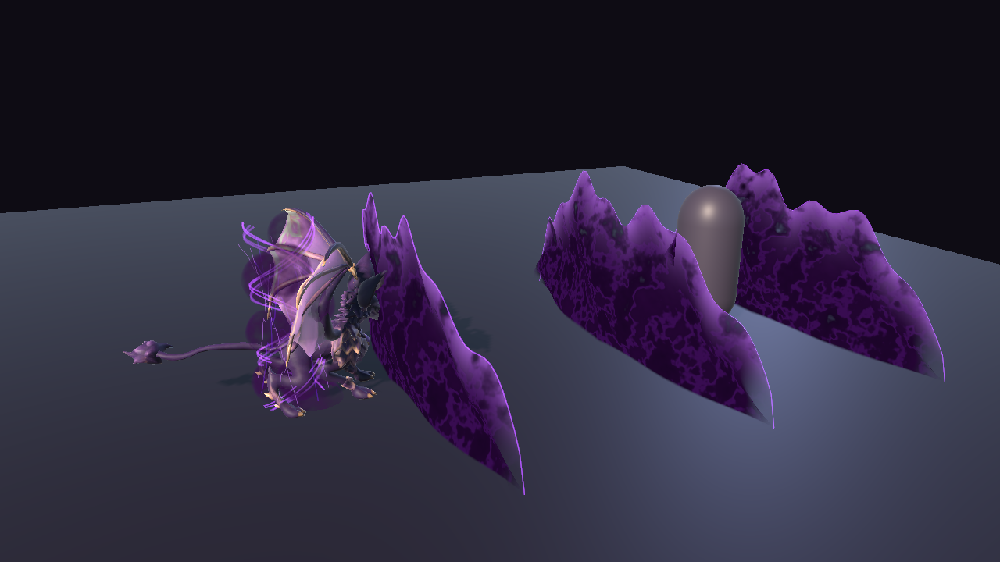
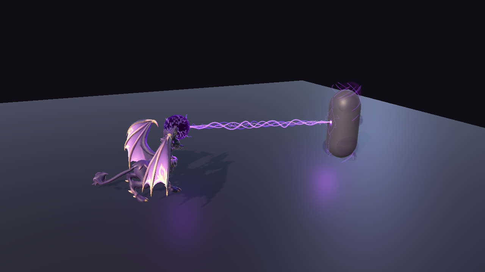
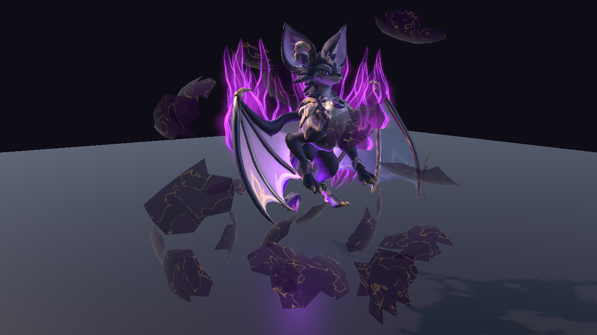
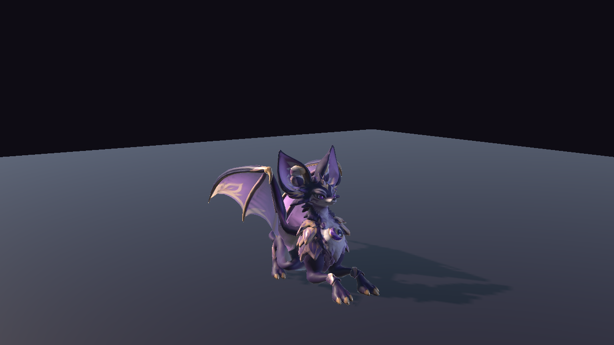

DARKNESS FAMILIAR · UNITY URP
Noctaryl.
A small creature.
A presence of its own.
A stylized winged familiar, brought to life with character animation, original darkness effects and a working Unity demonstration.
Watch the demonstrationSubmitted to Unity · awaiting review

18included animations
3attacks with effects
URPUnity demonstration scene
55bones · Generic rig
01 / IN MOTION
The character, in the engine.
Recorded from the Unity demonstration: attacks, effects and character states.
02 / DARKNESS IN ACTION
A nocturnal visual language.
Violet energy, luminous edges, temporary marks and dissipation. Each attack follows its own sequence.

Vague nocturne
Three distinct fronts, followed by ground traces and dissipation around the target.

Sceau funeste
Paw energy, a darkness tether, and a temporary mark and aura on the target.
Trait d'ombre: the third attack, with slash effects and its own impact.
03 / BEYOND COMBAT
A companion brought to life.
Egg reveal, idle, walking, greeting, feeding, rest and recovery. The demonstration brings these actions and their transitions together.
Animations and effects are supplied as a standalone asset. Inventory, combat rules and game navigation belong to the developer's own project.


04 / NYRAEVON
Creatures for a world in the making.
NYRAEVON is an independent fantasy game project. This page presents Noctaryl, using images and footage from its actual Unity demonstration.
The base model and textures originate from AI-assisted Meshy generation. The pack includes rigging, animation, corrective deformations, original effects, shaders and Unity integration developed within the project.
Content & compatibility
- Geometry
- 13,639 triangles
- Rig
- Generic · 55 bones
- Animations
- 18 native Unity clips
- Effects
- 3 attacks and egg reveal
- Tested version
- Unity 6000.5.9f1 / URP 17.5
- Tested platform
- Windows / Direct3D 11
- Sources
- Blender · GLB · FBX
No audio or LODs. Mobile, HDRP and Built-in rendering are not tested. Skin creasing and faceting can remain visible in some close-up poses. The walking demonstration uses flat ground, without obstacle navigation.
LET'S TALK ABOUT NOCTARYL